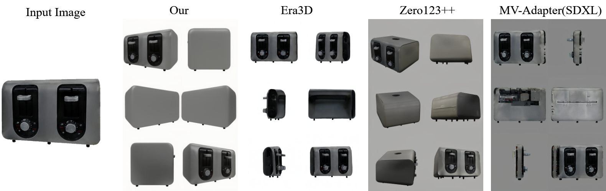
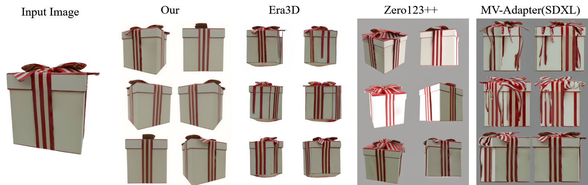
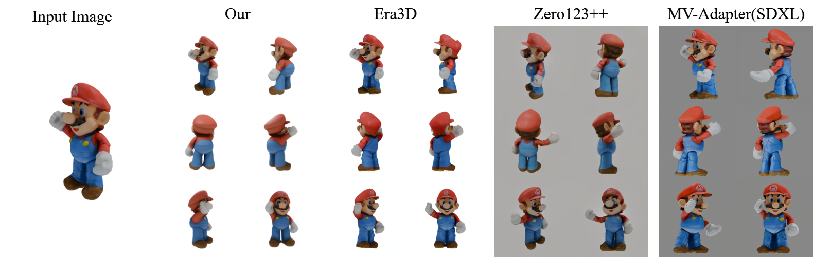
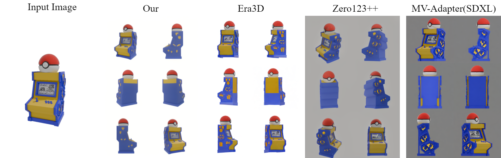
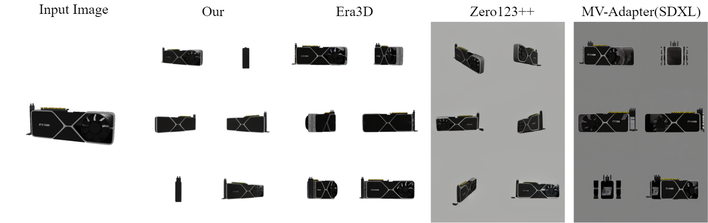
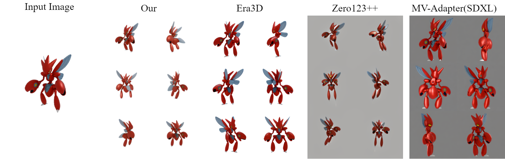
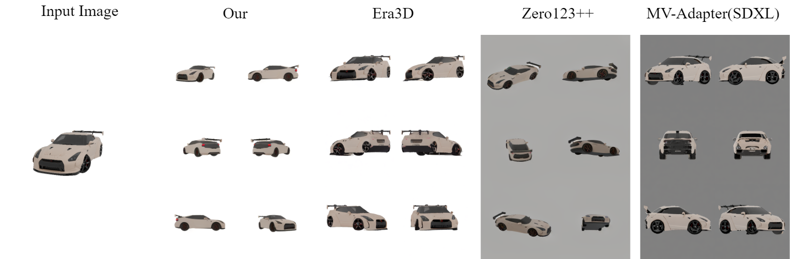

GeoMVD: Geometry-Enhanced Multi-View Generation Model Based on Geometric Information Extraction
Abstract
Multi-view image generation holds significant application value in computer vision, particularly in domains like 3D reconstruction, virtual reality, and augmented reality. Most existing methods, which rely on extending single images, face notable computational challenges in maintaining cross-view consistency and generating high-resolution outputs. To address these issues, we propose the Geometry-guided Multi-View Diffusion Model, which incorporates mechanisms for extracting multi-view geometric information and adjusting the intensity of geometric features to generate images that are both consistent across views and rich in detail. Specifically, we design a multi-view geometry information extraction module that leverages depth maps, normal maps, and foreground segmentation masks to construct a shared geometric structure, ensuring shape and structural consistency across different views. To enhance consistency and detail restoration during generation, we develop a decoupled geometry-enhanced attention mechanism that strengthens feature focus on key geometric details, thereby improving overall image quality and detail preservation. Furthermore, we apply an adaptive learning strategy that fine-tunes the model to better capture spatial relationships and visual coherence between the generated views, ensuring realistic results. Our model also incorporates an iterative refinement process that progressively improves the output quality through multiple stages of image generation. Finally, a dynamic geometry information intensity adjustment mechanism is proposed to adaptively regulate the influence of geometric data, optimizing overall quality while ensuring the naturalness of generated images.
Pipeline

The pipeline of the multi-view diffusion model guided by geometric information.
GeoMVD Performance on Wild Images

GeoMVD performs excellently on single-image–driven multi-view three-dimensional generation, is compatible with real photographs, synthesized images, and two-dimensional illustrations, and maintains cross-view consistency and high quality.
Performance Comparison of GeoMVD and Other Algorithms on GSO Dataset

Comparison Results of Sample 1 on GSO Dataset.

Comparison Results of Sample 2 on GSO Dataset.

Comparison Results of Sample 3 on GSO Dataset.
Performance Comparison of GeoMVD and Other Algorithms on Wild Images

Comparison Results of Sample 1 on Wild Images.

Comparison Results of Sample 2 on Wild Images.

Comparison Results of Sample 3 on Wild Images.

Comparison Results of Sample 4 on Wild Images.
BibTeX
@inproceedings{wu2025geomvd,
title={GeoMVD: Geometry-Enhanced Multi-View Generation Model Based on Geometric Information Extraction},
author={Jiaqi Wu and Yaosen Chen and Shuyuan Zhu},
year={2025},
booktitle = {arxiv}
}